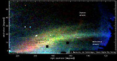

May 8, 2006
|
+ enlarge  |
|
The "Field of Streams" — this image is a map of stars in the outer
regions of the Milky Way
covering about one-quarter of the night sky, as observed by the Sloan
Digital Sky Survey (SDSS-II). The trails and streams that cross the image
are stars torn from disrupted Milky Way satellites. The color corresponds
to distance, with red being the most distant and blue being the closest.
The large, forked feature is the Sagittarius stream, further away from us
(lower left) and closer to us (middle right). Other features marked are
the Monoceros ring and the as yet unidentified stream. (Credit: Vasily Belokurov, SDSS-II Collaboration) |
A new map of stars in the Milky Way Galaxy, constructed with data from the Sloan Digital Sky Survey (SDSS-II), reveals a night sky criss-crossed with streams of stars, left behind by satellite galaxies and star clusters spiraling to their deaths.
Analyzing five years of data spanning nearly one-quarter of the sky, Cambridge University (UK) researchers Vasily Belokurov and Daniel Zucker created a dramatic new image of the outer Milky Way, using stellar colors eliminating the redder, nearby stars that would otherwise swamp the view of background structures. They found so many trails of stars in their high contrast image that they named the area the "Field of Streams."
Satellite galaxies orbiting the Milky Way are literally ripped apart by the tidal forces of our galaxy. As these satellites sink in gravitational quicksand, their stars are torn from them in giant streams that trace their orbital paths — just like meteor streams lie along the paths of defunct comets in the Solar system.
Dominating the Field of Streams image is the enormous, arching stream of the Sagittarius dwarf galaxy. The Sagittarius dwarf was discovered more than a decade ago and other researchers have previously mapped its long tidal stream in other regions of the sky.
Forked streams
But the new SDSS-II data had a remarkable surprise in store.
"The stream appears forked," said Belokurov. "We are seeing different wraps superimposed on the sky, as the stream goes around the galaxy two or three times."
Because of the multiple wraps, the observations provide strong new constraints on the dark matter halo of the Milky Way, according to Mike Fellhauer of Cambridge University. "The leading theories of dark matter predict that the Galaxy's halo should be flattened, like a rugby football. But our simulations only match the forked Sagittarius stream if the inner halo is round, like a soccer ball."
In addition to the Sagittarius arches, the Field shows faint trails of stars torn from globular clusters, and other rings, trails, and lumps that appear to be the remains of disrupted dwarf galaxies. "There are more streams here than in a river delta, commented Zucker.
Prominent among these is the Monoceros stream, discovered previously by SDSS-II scientists Heidi Jo Newberg of Rensselaer Polytechnic Institute and Brian Yanny of the Fermi National Accelerator Laboratory. The multiple rings of stars are all that remain from a dwarf satellite that was absorbed by the Milky Way long ago.
Crossing the Field is an enigmatic, new stream of stars extending over 70 degrees on the sky, whose original source remains unknown.
"Some of these 'murdered' galaxies have been named," explained SDSS-II team member Wyn Evans of Cambridge, "but this galactic corpse hasn't been identified yet. We're looking for it right now."
These new discoveries add weight to a picture in which galaxies like the Milky Way are built up from the merging and accretion of smaller galaxies.
"We've known about merging for some time" said Yanny, "but the Field of Streams gives us a striking demonstration of multiple merger events going on the Milky Way galaxy right now. This is happening all over the Universe, as big galaxies grow by tearing up smaller ones into streams."
These streams also provide new tests of the nature of dark matter itself, according to theorist James Bullock of University of California at Irvine; Bullock was not part of the SDSS team. "The fact that we can see a Field of Streams like this suggests that dark matter particles are very 'cold', or slow moving. If the dark matter was made up of warm,' fast moving particles, we wouldn't expect these thin streams to hang around long enough for us to find them."